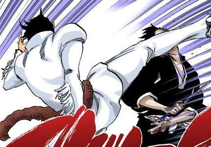

Você é um Shinigami da 10ª Divisão, liderada pelo Capitão Tōshirō Hitsugaya, e, embora seu posto seja modesto, você carrega dentro de si um poder latente que poucos conseguem perceber. Esse poder é como um fogo escondido. Mas agora você foi chamado para ir ao Hueco Mundo, com o destino de provar seu poder.VocÊ chega na dimenção, logo vc prefere?
Você vai direto ao objetivo ir para castelo do Aizen
Antes de ir para o castelo você decide explorar o local, então depois de uns 10 minutos observando você acha uma criança que se chama Nel, mas ela tem um número 3 nas costas, oque será que deve significar? no entando voê pretende recrutar lea para ir até o castelo?
Você decide entrar pelo castelo furtivamente, você passa escontindo desviantado de alguns arakas. Você continua andando, mas alguem consegue sentir sua preção esperitua, ele vai para cima de vc e se diz que é uma aranka número 103.
Então decide ir pela porta da frente, você destroi a porta e vé as espadas te olhando,você pensa que foi a pior escolha a se fazer.FIM


você recruta ela pra investir o castelo, vocês invadem o castelo furtivamente, mas no meu do caminho a espada número 5 vê vocês e vai pra cima
decide fugir você vira as costas e sai correndo, mas o aranka e rapido e consegui usar seu chute poderoso que deixa você tonto, mas infelezmente ele te dar outro chute na cara que de derrota facilmente
você decide lutar, mas apenas de um golpe para derrotar o oponente, você fica confunço e fica pensando de o qual fonte vocÊ estava, que seu poder estav muito alem dos outros oponentes.Depoes de um pequeno descaço você volta para o objetivo que era coletar informaçôes sobre Aizen, no entando você vé o assintente dele Gin andando, oque pretende fazer
Você está arrogante como o seu poder, então você decide ameaçar gin para de dizer os planos, então quando vc apre a porta, você vai para cima dele ele te vê e faz uma cara de psicopata, ele se teletransporta atrás de vc e envia ativa a sua baikai e te derrota. FIM

Você segue ele e escutas coisas importantes sobre os planos de Aizen sobre se tornar o rei das almas etc. Logo você a nota tudo que você escutou e volta pra Soro Society. Fim, para parabens vc se tornou um tenente da 10 divisão, bem vindo ao grupo
Vc decide lutar com ele, você vê que ele é bastante forte e está quase te derrotando até você ativa sua baikai e ele libera a espada se tornando um hollow e ficamos mais forte. NEL vê tudo isso e decide te ajudar ela do nada ele fica maior e mais forte e vc entende q ela era a espada número 3 então vcs dois juntos derrotando ele. Ele tem informações sobre Aizen então vc pretende

Foi pega a Nel e sai correndo e ele aparece na sua frente enviando sua espada em vc e te derreta. Fim
Você ameaça ele dizendo q se ele não contar tudo oq ele sabe vc vai matalo, Nel fica fica assustada com o seu jeito e ela vê q você é uma ameaça igual o Aizen, enquanto você está ameaçando a Espada Nel da um ataca atrás de vc enviando uma espada no seu coração
Depois de você falar algumas coisas sobre o Aizen que ele vai conquistar o objetivo dele ele vai largar o número 5 , a espada fica surpesa e começa a entrartodos os planos de Aizen, você agradece o espada e volto pra soro society e Nel fica no hueco mundo para te ajudar a investir Aizen. Fim